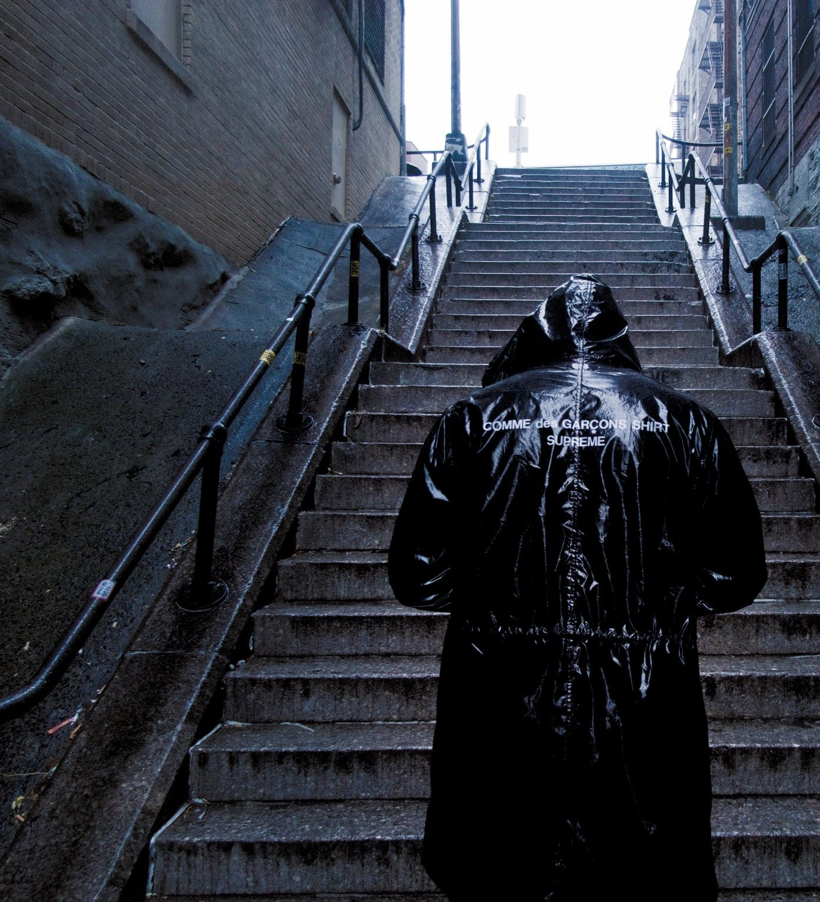

About
Photographer, filmmaker, and clothing designer.
B. Moore is an American filmmaker and gallery photographer known for his dramatic imagery that tells an interesting story.
He began his work with visuals as a child, filming short skits with his friends, then skate videos, which were sold in stores all over the world. His first narrative film will premiere in 2026.
Today his focus is as a creative director, fine art photographer, clothing designer and filmmaker.
Whether it’s a single frame of a photograph or fifteen thousand of them in a narrative film, story comes first.